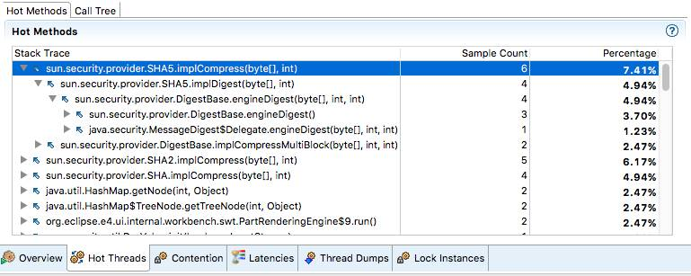
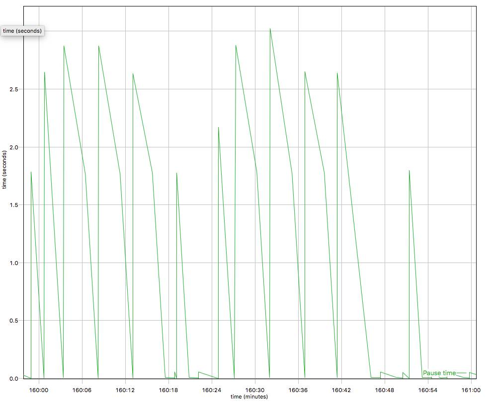

听阿里巴巴JVM工程师为你分析常见Java故障案例
本文根据12月23日阿里巴巴技术保障部JVM组软件工程师陆传胜老师在【DBA+社群，微信公众号：dbaplus】的主题分享整理！小编特别整理出其中精华内容，供大家学习交流。同时，也非常感谢陆传胜老师对DBA+社群给予的大力支持。
目录
-
HotSpot常识
-
Java故障排查方法论
-
Java故障案例分析
Part 1
HotSpot常识
-
HotSpot是目前最常见的开源JVM（GPL协议），用来运行Java应用和applet，本次讨论基本都是基于这一软件来进行的。
-
所有的Java对象都是分配在Java堆上的，Java代码中看到的引用，在JVM的实现中就是一个指针，指向一段被表示成对象的内存区域。这个区域可能被移动，引用指针的值不同于一般的C/C++指针，是会从外部改变的。
-
执行的Java字节码都是动态加载、链接、编译的。
-
JIT compiler，JVM里面有一个模块负责把Java字节码编译成优化过的native机器码，这样可以极大提高执行效率。
但是HotSpot的JIT编译器只会编译热点方法，一个Java方法load进来后会默认从解释器开始执行，只有部分或整体的解释执行次数超过一定次数才会被编译优化，在某些条件下，比如debug，会把方法去优化退回到解释器执行。解释器可以看做是一个没有优化的翻译器，会把每一条bytecode指令机械的翻译成汇编指令来执行。
1.6, 两个stack，interned string放到heap
这张图里每一个小方块展开都可以写一系列文章，今天就不在这里展开了。
参考链接:
http://blog.jamesdbloom.com/images_2013_11_17_17_56/JVM_Internal_Architecture.png
http://blog.jamesdbloom.com/JVMInternals.html
Part 2
Java故障排查方法论
11参考书

2几个我个人常用的三个原则
-
从浅显和广泛开始。
分析问题应该尽量从高层入手，收集各种各样的现场信息，版本信息，尽量不要一开始就debugger跑起。 -
分而治之，隔离问题。
将问题隔离到尽可能小的领域中，比如某个特定系统、特定版本、甚至特定机器中。之后如果是java的问题，还可以继续分析是java应用、容器、或者jdk的问题，最后应该能确定到某个模块的某些代码、一次commit、一行配置的问题。整个排查问题的过程就是一个从上到下，一步步缩小问题范围的过程。 -
福尔摩斯法则。
当排除了所有的不可能，那么剩下的那个，不管多么荒谬，就是罪魁祸首了。
3重现故障和收集数据
不同于其他工业系统，软件工业的一个好处就是重新尝试的代价一般都特别小，重启一个进程总比重启一台发动机、一个核反应堆轻松很多。所以如果故障问题能稳定的通过重启复现，这对于修bug的同学将会是个天大的好消息。
但是现实中，特别是在生产环境中，更多的事后故障问题不是你想发现就能发现，经常是重启后就没了，跑了不确定的时间就又出现了，所以只能通过收集故障时的系统状态数据来分析问题。状态数据大致可以分为两类：一是监控类数据，收集这类数据对于应用的性能影响很小，基本可以忽略不计，所以可以持续收集，比如GC
log，应用log等；第二类是某些瞬时数据，这些数据要么收集的代价很大，很影响系统性能，要么时效性很高，过了故障点一切可能就都不一样了，所以不能持续收集，必须迅速的在故障出现点自动采集，比如Heap
dump，core dump等。
下面这个图描述了常见的Java故障和需要收集的数据之间的概要关系
JVM级别数据
对于JVM，下面这些选项最好常年打开选项，对于收集故障数据很有帮助
-XX:+PrintGCDetails
-XX:+PrintGCDateStamps
-XX:+HeapDumpOnOutOfMemoryError -XX:HeapDumpPath=/log/gcdump
系统级别数据
Java进程运行的环境信息也是重要的诊断信息，如果能在故障点全部收集下来对于后续调试分析也是很有帮助的，这些信息主要包括： 系统基本软硬件信息、所有进程的情况、打开的文件描述符等等。
简单的做法可以在Java进程非正常返回的时候执行一个脚本，自动的去采集一遍这些信息。（HotSpot支持在致命错误或者oom时执行一个系统命令，可以设置让其去直接执行这个脚本）。或者说是使用一个监控程序，监视Java进程的输出结果，如果发现异常、crash等情况，就收集一次环境信息。
Part 3
Java故障案例分析
故障1CPU load过高
问题一般是指CPU使用率很高，但是系统并没有很繁忙，一般有两种情形。
情况1，启动阶段
应用刚启动之后或者刚放了用户流量之后，也是可能突然cpu load飙到很高的，这一般不是java代码引起的，而是由于jvm的jit编译器引起的。（当然如果你使用的是一些非普遍的JDK，比如IBMJDK，并且启用了AOT之类的功能，是不可能遇到这个情况的，因为代码已经提前编译好了）
-
-XX:+TieredCompilation
可以先一定程度上减轻这个问题，效果上相当于把消耗资源严重的一些优化处理延后进行了，先把java方法编译到一个低优化级别的native方法。值得注意的是，这个参数会消耗比较多的内存资源，同一个方法被编译了多次，存在多份native内存拷贝，建议是把codecache调大一点儿（-XX:+ReservedCodeCacheSize，InitialCodeCacheSize）。
Optional：
CodeCache不足可能会引起性能问题，这是一种非常少见的故障，code cache不足，jit需要编译新的方法的时候就会不停的尝试清理code cache，丢弃掉无用的方法，频繁的尝试会导致大量资源消耗在JIT线程上。
-
-XX:+PrintCompilation
为了确认这个问题可以尝试使用这个参数，输出JIT编译的情况，如果初始阶段发生大量方法的编译，就可以确定是由于JIT编译引起的。一般情况下，忍一忍熬过一开始的编译阶段就好了。如果用户请求超时严重，无法忍受，可以尝试使用分层编译、提前预热系统。
情况2，非启动阶段
一般是一些计算密集型任务、忙等操作、或者过于密集的线程调度。一般需要定位出被频繁执行的代码逻辑（热点方法），然后再进行优化，目前可以使用各种profile工具来分析。比如Java Mission Control, ZProfiler(硬广：阿里自产的profiler工具)</p>

故障2应用性能下降/较差
这个问题又两个层面，一个是应用的性能下降了，这一般是来自监控系统或者用户突然的报警 。从分割问题的角度看，性能下降一般是和之前时间点比较得出的结论，那么就肯定有一个分水岭，在某一个时间点（通常是一个改动发生的时候）之后就会开始性能下降。所以初始的解决方案比较简单，就是找到改动发生的时间点，挑出造成性能下降的改动，然后分析这个改动为什么会造成性能下降。
但是如果就是一个应用性能较差的问题，就比较棘手了，这个通常意味着没有可以比较的时间点，相当于凭空设定一个性能指标，将系统性能优化提升到这个目标。通常这是一个需要多方合作，修改多个层次的代码、配置才能达到的目标。通常而言可以继续尝试profiling Java应用，分析性能瓶颈，优化瓶颈部分。
可能有影响的瓶颈包括：
锁
这个一般需要设计、代码层面的改动，使用更高效的加锁机制，减轻竞争，等等。
GC
频繁full gc的又有两种情况，一种是说full gc完了之后整个heap还是没有很多的可用空间，一般是可能是由于最大heap上限可能设置有点儿小了，或者应用有内存泄露，需要做个heap dump具体分析下内存里面各个部分的使用情况。
另外一个情况是full gc完了之后整个heap还是有不少的可用空间的，比如下图，这个一般是有一些“临时”对象晋升到了老年代，新生代没有滤掉足够的短生命周期对象，可能需要调整JVM参数-XX:MaxTenuringThreshold(15, 4bits)提高promote到老年代的门槛。
分析GC日志，一个开源的免费解决方案是eclipse的GCMV

GC参数优化
关于GC其实你能做的并不多，影响最大就是通过调整JVM启动时参数，来调节GC的各个行为，但是推荐读懂了官方文档中的说明再做调整：
http://www.oracle.com/technetwork/java/javase/tech/vmoptions-jsp-140102.html
1. 仔细设计一个适合你自己环境、应用的参数模板。
2. 收集应用信息，评估应用内存活动行为（参见“Java性能优化权威指南”），常驻内存对象大小，大对象比例，native内存使用，分配速度等。。。
3. 调整下列参数（不是一条命令哦）
-Xms8888m
-Xmx8888m
-Xmn8888m
-Xss8888k
-XX:PermSize=8888m
-XX:MaxPermSize=8888m
-XX:+UseStringCache
-XX:+UseConcMarkSweepGC
-XX:+UseG1GC
-XX:+UseParNewGC
-XX:ParallelGCThreads=8888
-XX:+CMSClassUnloadingEnabled
-XX:+DisableExplicitGC
-XX:+UseCMSInitiatingOccupancyOnly
-XX:CMSInitiatingOccupancyFraction=88
GC停顿时间太长
堆太大的时候，CMS GC可能会停顿比较久的时间，-XX:+CMSScavengeBeforeRemark能通过在remark阶段前做一次young gc减轻这个时间。
另外可以考虑换G1。
故障3内存耗尽OOM
基本的解决思路，多给点儿或者少用点儿呗。
-
Java对象真的耗尽了内存资源，Eclipse MAT
HeapDump，分析内存泄露，大对象，对象关系图。 -
Native内存耗尽， DirectBuffer，malloc
JVM运行过程中，虽然会对Java堆做垃圾收集，但是如果jni或者非DirectBuffer的Unsafe分配的内存没有回收，会逐渐累积直至java进程结束。DirectBuffer虽然Java对象很小,但是使用的内存可能会很多。
参考:http://lovestblog.cn/blog/2015/05/12/direct-buffer/
-
PermGen耗尽，一般动态类加载导致，已经成为历史，尽早升级吧。
故障4崩溃crash
现代JVM发展到今天已经很健壮了，一般很少会出现crash的情况，如果出现了，很有可能是Java代码执行了不安全的操作，比如使用Unsafe去直接操作内存、自己编写了JNI函数中crash了。
目前的现实是很多第三方的库确实直接使用了Unsafe去实现各种“高效”的操作，随便搜索下Github就可以看到大量的开源Java、Scala库使用了JDK提供的unsafe类
对于crash的情形，需要收集的信息包括各种dump，最关键的是系统core dump，方便将来使用GDB做事后分析，在linux上一般需要使用ulimit –c unlimited 命令修改core文件尺寸上限才行。
有了core dump，剩下的分析一般都是使用GDB继续了，crash的情形一般反而比较直观。如果不是unsafe、自己jni引起的crash问题，恭喜你，真的发现bug了，这个问题直接给Oracle或者java社区报bug吧。
脚本太复杂，怎么知道最后跑起来的Java进程到底设置了哪些参数？
-XX:-PrintCommandLineFlags
Q1：关于内存泄露，是不是可以用一些开源产品来加探针，这方面有没有好的建议?
A1：内存泄露其实有两个方面，如果是native的malloc泄露，可以通过 valgrind，jemalloc等工具发现，这个和传统c++应用内存一样的；对于某些因为强引用链无法释放的java对象，一般都是 heapdump之后使用eclipse的mat工具分析“可能泄露的”，因为程序并没有结束，而且还持有强引用，很难得出结论说某些对象是不是内存泄露。
Q2：关于内存泄露, 怎么定位到具体代码？
A2：定位到代码目前比较可行的，就是用MAT分析出那些类型的对象发生了泄露,然后去扫描代码看看这些对象在哪里分配的，当然如果大量的string，byte.就不好办了，一般是以用户应用自定义的类为线索去查找。这样可以大大降低工作量。
讲师介绍：陆传胜
-
现就职于阿里巴巴技术保障部JVM组，主要工作是阿里巴巴定制化JDK的开发， 以及相关的Java技术支持。
-
曾就职于IBM Java技术中心，负责IBMJDK开发、参与OpenJDK社区，是OpenJDK jdk8项目committer。
-
联系方式chuanshenglu@gmail.com